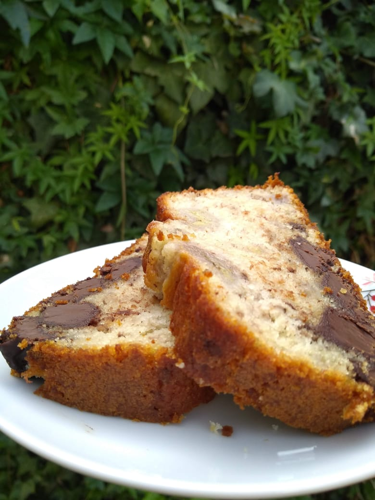
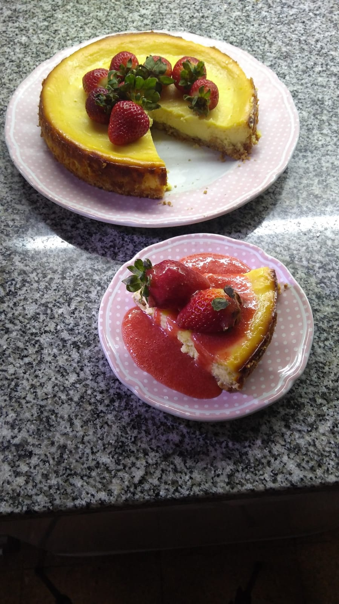
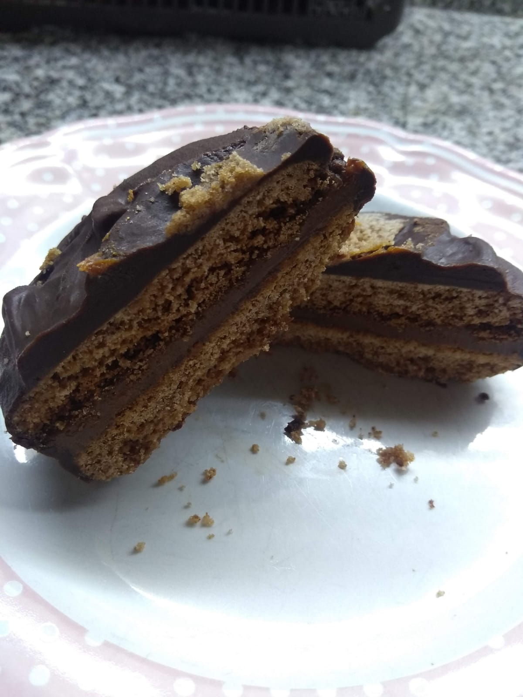

Recetas
Budín de Banana

150cc. de aceite de girasol
200 g. de harina leudante
CheeseCake para celíacos

250g de galletitas dulces sin gluten
600g de queso crema firme entero
Cucharadita de esencia de vainilla
Alfajor marplatense

Ralladura de 1 limón o naranja
1 pizca de bicarbonato de sodio
Dulce de leche repostero cantidad necesaria
50cc de whisky, Cognac o ron